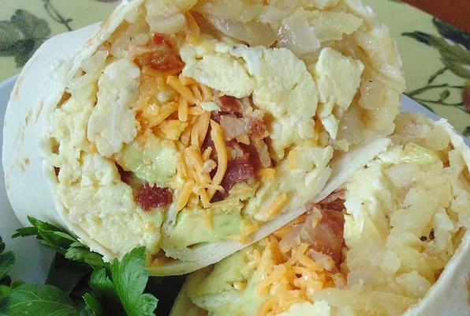

Breakfast Burrito
Return to Home Page

Description:
These hand-held breakfast bundles are quick to make and fun to take when you're on the go. Set out a variety of filling ingredients and toppings and let everyone assemble their own.
Ingredients:
- 1 Tbsp butter
- 1 cup diced red potatoes
- 1 1/2 cups chopped onion
- 6 eggs
- Pinch of salt and pepper
- 8 whole wheat tortillas
- 1 pound cooked and crumbled turkey bacon
- 1 1/2 cups shredded low-fat cheddar cheese
- 1 avocado, thinly sliced
- 1/2 cup salsa
- 1/2 cup sour cream
Steps:
- Melt 1 1/2 teaspoons butter in a skillet over medium heat. Cook and stir potatoes in hot butter until tender, 10 to 15 minutes. Transfer potatoes to a bowl.
- Melt remaining butter in the same skillet over medium-high heat. Saute onion in hot butter until onion is soft and translucent, 5 to 10 minutes. Transfer onion to a bowl.
- Beat eggs, salt, and pepper together in a bowl. Reduce heat under skillet to medium. Cook and stir eggs in hot skillet until set, 3 to 5 minutes; transfer to a plate.
- Spread tortillas out onto a work surface. Spoon potatoes, onion, eggs, bacon, Cheddar cheese, avocado, salsa, and sour cream in a line across the middle of a tortilla. Fold opposing edges of each tortilla to overlap the filling. Roll 1 of the opposing edges around the filling into a burrito.
- Enjoy :)
Nutrition Facts:
Per Serving: 439 calories; protein 24.1g; carbohydrates 36.1g; fat 25.8g; cholesterol 204.7mg; sodium 1213.7mg
Return to home page